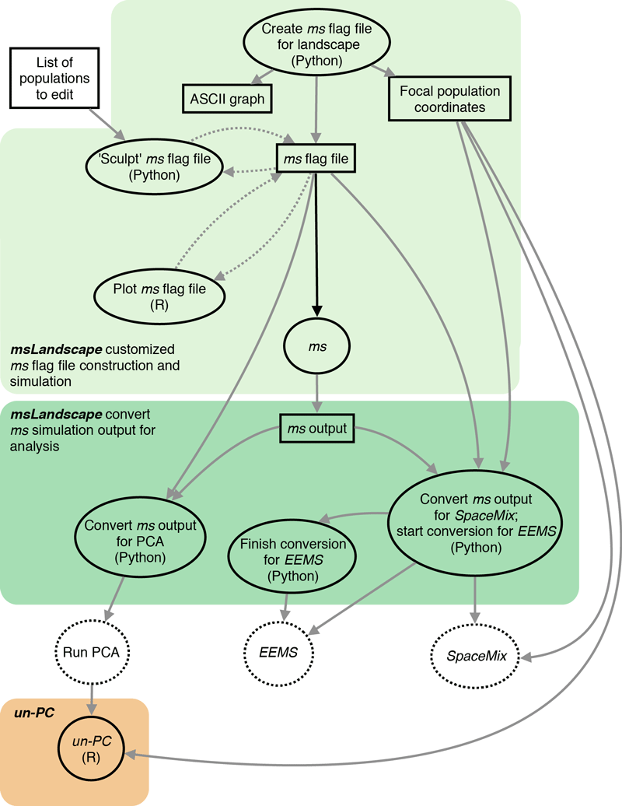

Schematic diagram (below) illustrating how msLandscape streamlines the process of generating landscape genetics simulations using ms, and how the analysis method un-PC fits into the analysis pipeline.
In this diagram files are represented as rectangles and processing or analysis steps are represented as ovals, with dashed ovals being analysis methods outside the msLandscape toolbox or the un-PC package. Arrows denote workflow progression, with dashed arrows representing optional steps to visualize and edit ms flag files.
msLandscape is a toolbox that first allows the largely automated generation, customization, and visualization of most landscape configurations. This information is specified by an ms flag file that then can be used to generate multiple independent coalescent simulations of any landscape using ms. These functions of msLandscape are highlighted in the light green box in the diagram.
After simulation, msLandscape also includes tools to help convert the raw simulation results into the formats required for analysis using PCA, EEMS, and SpaceMix, which are highlighted in the dark green box in the diagram. A small amount of additional configuration needs to be completed manually by the user before EEMS or SpaceMix analysis is possible.
The un-PC package is built to run using PCA results either from the msLandscape pipeline or from any other data source. See the documentation for msLandscape and un-PC for details and examples of their use.
 msLandscape home